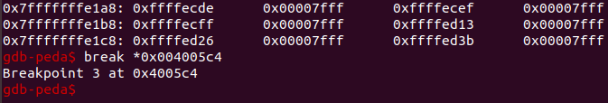
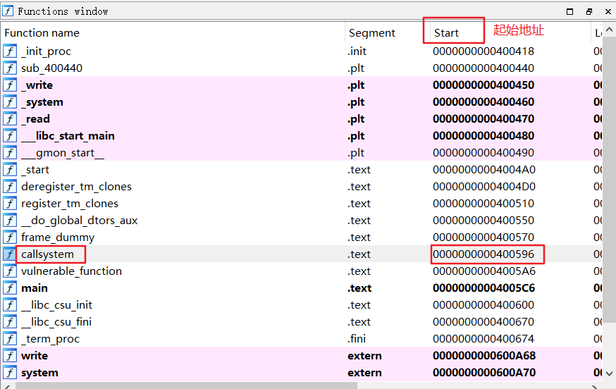

攻防世界-level0
解题过程：
首先，将附件拖入Linux虚拟机中，查看一些基本信息：
$ file [文件名] （查看基本信息）：
此处我们只要知道它是64位文件就行
接着 $ checksec level0 （查看文件开启的保护机制）：
这些保护机制是干嘛的自己去百度了解，或者阅读《CTF权威指南》
转入正题：
将附件拖入64位ida，找到main函数：
发现只有一个写函数和一个跟在return后面的函数，我们跟进vulnerable_function：
发现该函数中定义了一个128字符大小的字符数组，而后面的read函数最多可读入0x200（16进制）= 512 个字符，这也说明了这题是一道栈溢出题
接着跟进buf数组，找到return标志“r”，再用buf的起始偏移地址（-80）减去“r”的偏移地址再取绝对值得 ：0x|-80-8|=0x88（0x表示16进制）= 136，也就是在输入136个冗余字符后，再输入的字符覆盖的地址空间就是这个“r”指向的地址空间，只要我们构造好这串接下来输入的字符串，就能依靠这个“r”将程序跳转到我们想要执行任何位置，使程序从跳转到的地址继续开始执行指令
此时我们按下Shift+F12转入String window中看看有没有我们想要找的/bin/sh
还真有，那我们跟进去看看：
继续跟进callsystem+4↑o：

F5切换视图，得知/bin/sh存在于callsystem函数当中：

拓宽旁边的Functions window，查看callsystem函数的入口地址（起始地址）：
ok，入口地址0x00400596，那么我们构造的payload = ‘a’*136+p64（0x00400596）
因为这是64位文件所以用p64（），注：32位文件一定要用p32（），64位文件一定要用p64（），64位文件用p32（）的话数据前补0不够会错，32位文件用p64（）的话前补0过多也会错，不过我还没实践过
脚本如下：
1 | from pwn import * #导入pwn模块 |
个人问题：
emm…：
上次新手赛的时候我就是因为这远端连接不上的问题导致我连那简单pwn的flag都没拿到，浪费了大量的时间，当时我还以为是举办方的服务器出问题了，现在看来是我的个人PC有问题⊙∀⊙！
2021/11/11 18:06
ok，重启了下虚拟机我就能连上远端了。。。。。。要是早点知道就好了。。。。。。
但愿能进校CTF队吧
1 | flag:cyberpeace{f0ca5da1cdfb6340b7bf05a37ea6a8cc} |
补充：
xiaoxiao疑惑
这里题目的端口号是50416，跟下面的51403不一样是因为每次创建场景的端口号都是随机的，下面的脚本是我在前一个场景下写的，所以端口号是前一个场景的端口号，与这张图的端口号不一样。
为什么我的脚本里没有打开远端服务器level0文件的操作，只是发送了一串payload就拿到了远端服务器的shell？
解答：在题目创建题目场景的时候，远端服务器已经启动了level0，并把level0的输入输出绑定到了51403端口，所以我用remote从51403端口接入时就已经是在跟level0交互了
gdb本地调试：
gdb打开附件，在main函数和vulnerable_function函数（字符输入）处打下断点：
注，用地址打断点要用 $ break *[16进制地址]
首先：$ run运行程序，并停止在第一个断点main函数处，但停在这里没什么用
我们使用 $ continue 指令使程序运行至下一断点vulnerable_function函数
可以发现那里打印出了一个Hello，World，这是我们执行main函数的过程中打印出来的，由下面的反编译代码可知，main函数中有打印Hello，World的语句
然后我们单走三步 $ si :

code段出现了 < read@plt >，这对应着我们vulnerable_function函数中的read函数的调用
接着我们再单走5步 $ si （前4步使指针指向read，第5步进入read）进入read函数查看，此时刚进入read函数：
看到此时栈段的初始地址：
使用 $ x/136wx 0x7fffffffdf08 从低地址向高地址打印136个内存地址（不标准术语）：
记住此时栈的情况，如上↑
再使用 $ x/180wx 0x7fffffffdf08 多打印一些栈空间存储情况用以与之后做对比：
高能预警：
接下来，我们返回ida去找到vulnerable_function函数的末尾地址，为什么要找？因为我们现在的指针刚进入read函数，指着read函数的初始地址，但我们调试的目的是要输入字符使输入的字符覆盖栈地址空间，然后查看栈情况看覆盖的地址对不对，而此时的指针位置离我们可输入字符的那条指令不知道还有多远（因为假如read函数还调用了其他系统函数的话，就会有很多额外指令，我们单走 $ si 不知道要走多少指令，单走一次 $ si 相当于系统执行一条普通指令，计算机执行指令的速度我在百度上搜了一下，1纳秒左右，不知道对不对，就算我们以1秒执行一次$ si 并查看当前指针位置的速度进行，跟1纳秒一条指令相比，差了10^9个数量级，简言之我们一步 $ si 执行一条指令,计算机相同时间内能执行10^9调指令）所以我们直接找到vulnerable_function函数的末尾地址，计算机在断到这个断点之前一定会先执行可输入字符的那条指令（这个可输入字符的指令是在vulnerable_function函数调用中出现的，所以我们执行到vulnerable_function函数的末尾一定会执行到这个可输入字符的指令）
好吧，废话说多了，现在返回ida找末尾地址：
因为我们要找末尾地址，所以我们点击return后按下tab键
初始位置自动定位在leave处，leave的英文是什么我好像不知道，反正这就是vulnerable_function函数的末尾地址 0x004005C4
现在我们再返回gdb下一个断点 $ break *0x004005c4

ok，断点下好了，输入continue继续执行：
很好，现在可以输入字符了，但我们要输入136个a，太多了，我们可以用python快速得出：
将这136个a字符复制过去，按下回车
此时我们再执行 $ x/136wx 0x7fffffffdf08 和 $ x/180wx 0x7fffffffdf08
先是$ x/136wx 0x7fffffffdf08：
诶，我去，我还以为这里全部都会被0x61（字符a的ascll码值）填满，分析了一下，一个字符是十进制的1，而我们$ x/136wx 0x7fffffffdf08 中的136是16进制的136，转成10进制是310，可是我拿打印出的最后地址0x7fffffffe118-0x7fffffffdf08 = 0x210 = 528，懵了懵了
好奇怪啊，算了这不是重点，这里不纠结了
把之前的图拿过来对比一下，之前栈里面是没有0x61616161的：
我们继续看栈，这个在覆盖了136个a字符的栈后面第一个东西是什么？是0x0040050a，这跟那些函数的起始地址长得很像不是吗，所以这应该就是一个return调用的地址没错了，也就是说我们构造的payload是没有问题的，得到的这个结论就是gdb调试的意义，我们之前说的payload = ‘a’136+p64（0x00400596），这个0x00400596就是要把这里0x0040050a覆盖掉的新地址，覆盖以后再执行程序，程序执行到这个return，return到0x0040050a，就能进入system函数（system（”/bin/sh“））拿到shell
再重新理一遍本题原理：
1、找到栈溢出函数（本题main() -> vulnerable_function() -> read()）
2、覆盖buf相距0x88=136个字符的return的返回地址为带有system（”/bin/sh“）的callsystem的首地址0x00400596

3、写好脚本就行
1 | from pwn import * #导入pwn模块 |
写得好累，不过把基础知识打牢了很多，还行吧
不知道我的文字描述别人看起来感觉怎么样，反正我自己看得有些吃力
对了，如果发现有错误，欢迎指正（wx：xy1724252720）